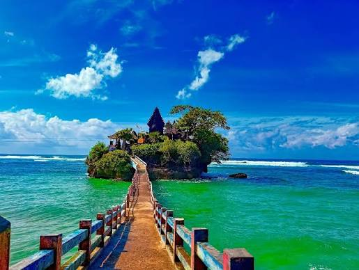

Pantai Balekambang
Kabupaten Malang, Jawa Timur

Tentang Pantai Balekambang
Pantai Balekambang merupakan destinasi wisata pesisir di Kabupaten Malang, Jawa Timur. Pantai ini dikenal dengan bentang lautnya serta pulau kecil di dekat pantai yang menjadi salah satu ciri khas pemandangannya.
Suasana pantai dan panorama laut menjadikannya pilihan untuk menikmati pemandangan alam, berjalan di sekitar pantai, dan mengambil foto. Pengunjung tetap perlu memperhatikan kondisi ombak karena pantai ini berada di pesisir selatan.
Informasi Singkat
- Lokasi: Kabupaten Malang, Jawa Timur
- Jenis wisata: Wisata pantai dan alam
- Daya tarik: Pemandangan laut dan pulau kecil di dekat pantai
- Kegiatan: Menikmati panorama, berjalan di tepi pantai, dan berfoto
Daya Tarik
- Pemandangan laut di pesisir selatan Kabupaten Malang.
- Pulau kecil yang menjadi ciri khas panorama pantai.
- Suasana alam untuk bersantai bersama keluarga atau teman.
- Spot foto dengan latar laut dan pemandangan pesisir.
Tips Berkunjung
- Periksa cuaca dan kondisi pantai sebelum berangkat.
- Jangan berenang di area berbahaya atau ketika ombak tinggi.
- Ikuti rambu keselamatan dan arahan petugas setempat.
- Bawa kembali sampah agar kebersihan pantai tetap terjaga.
- Pastikan informasi tiket dan jam kunjungan sebelum perjalanan.